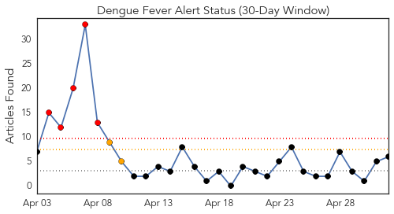
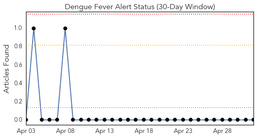
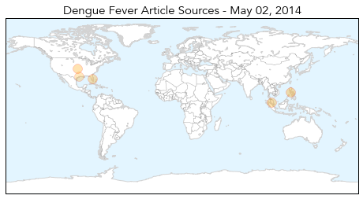
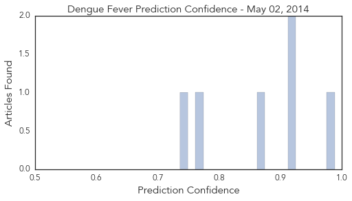

Hepatitis
30-Day Web Trend
2 alerts, 0 warnings

30-Day Twitter Trend
0 alerts, 0 warnings

Article Locations

Article Confidences

Top Articles:
Top Tweets:
-
No tweets found for May 02, 2014
Dengue Fever
30-Day Web Trend
5 alerts, 2 warnings

30-Day Twitter Trend
0 alerts, 0 warnings

Article Locations
Article Confidences
Top Articles:
- 0.988
- World’s first dengue vaccine shows promising trial results
- 0.917
- Subramaniam: 30,000 dengue cases, more than 60 deaths reported - Nation
- 0.916
- Bites and Parasites: Vector-Borne Diseases and the Bugs Spreading Them
- 0.866
- Mosquitoes Aren't Just Pests, They're the World's Most Lethal Creature
- 0.769
- Houston researchers take on typically neglected diseases
- 0.736
- Sanofi Pasteur reports positive dengue vaccine trial data
Top Tweets:
-
No tweets found for May 02, 2014